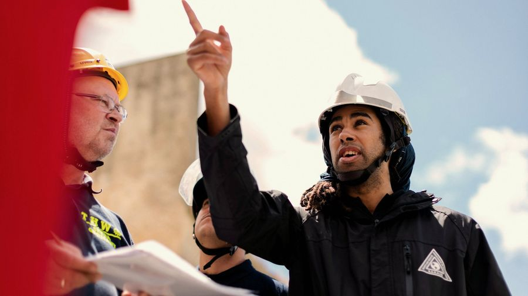

01
Consultoría y asesoría
Diagnóstico preciso y recomendaciones que la organización puede ejecutar con sus propios recursos.
Entregables
- Diagnóstico inicial (línea base)
- Matriz IPERC
- Informe de lo que falta cumplir
- Plan de acción priorizado